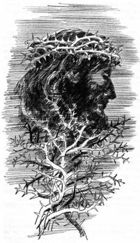

1.) We affirm and proclaim the everlasting gospel of the vicarious atonement of our Lord Jesus Christ on the cross of Calvary.
1.) We affirm and proclaim the everlasting gospel of the vicarious atonement of our Lord Jesus Christ on the cross of Calvary.
John 3:14-18 14 And as Moses lifted up the serpent in the wilderness, even so must the Son of man be lifted up: 15 That whosoever believeth in him should not perish, but have eternal life. 16 For God so loved the world, that he gave his only begotten Son, that whosoever believeth in him should not perish, but have everlasting life. 17 For God sent not his Son into the world to condemn the world; but that the world through him might be saved. 18 He that believeth on him is not condemned: but he that believeth not is condemned already, because he hath not believed in the name of the only begotten Son of God. 19 And this is the condemnation, that light is come into the world, and men loved darkness rather than light, because their deeds were evil. 20 For every one that doeth evil hateth the light, neither cometh to the light, lest his deeds should be reproved. 21 But he that doeth truth cometh to the light, that his deeds may be made manifest, that they are wrought in God.
 Our Lord Jesus Christ is the promised "Seed of the Woman" who has fulfilled all the righteous legal and moral demands of God's Law for us so that in Him all repentant sinners who put their faith in His blood are accounted sinless and righteous in His merciful reckoning even unto the coming of the Lord. The justification of repentant sinners is by God's unmerited grace alone through faith in the sinless life and atoning death of Christ alone as revealed in the Bible alone. From the beginning of life in Christ to the end of life in Christ, the repentant believer in Christ will always confess that he needs the covering of Christ's forgiveness and imputed righteousness.
Our Lord Jesus Christ is the promised "Seed of the Woman" who has fulfilled all the righteous legal and moral demands of God's Law for us so that in Him all repentant sinners who put their faith in His blood are accounted sinless and righteous in His merciful reckoning even unto the coming of the Lord. The justification of repentant sinners is by God's unmerited grace alone through faith in the sinless life and atoning death of Christ alone as revealed in the Bible alone. From the beginning of life in Christ to the end of life in Christ, the repentant believer in Christ will always confess that he needs the covering of Christ's forgiveness and imputed righteousness.  The Holy Spirit indwells all believers in Christ to empower them and help them to begin to walk in obedience to God's holy Law in sanctified holy living. But the sanctified life of even the most godly of God's people will still need to be covered by the active righteousness (His sinless life) and passive righteousness (His atoning death on the cross of Calvary) of Christ's imputed or "reckoned" righteousness even unto the Last Day when Christ comes again. Thus we affirm and proclaim the message of "repentance towards God and faith in the Lord Jesus Christ". This message is a warning and a witness that God is about to destroy all the unbelieving world and that all who refuse to repent, believe the gospel of Christ, and allow Christ to begin to write His Law upon their hearts through the indwelling Holy
The Holy Spirit indwells all believers in Christ to empower them and help them to begin to walk in obedience to God's holy Law in sanctified holy living. But the sanctified life of even the most godly of God's people will still need to be covered by the active righteousness (His sinless life) and passive righteousness (His atoning death on the cross of Calvary) of Christ's imputed or "reckoned" righteousness even unto the Last Day when Christ comes again. Thus we affirm and proclaim the message of "repentance towards God and faith in the Lord Jesus Christ". This message is a warning and a witness that God is about to destroy all the unbelieving world and that all who refuse to repent, believe the gospel of Christ, and allow Christ to begin to write His Law upon their hearts through the indwelling Holy
2.) We affirm and proclaim the apostolic teaching that the "hour of God's judgment" has come. All the world is being called out of the kingdom of Satan, called spiritual "Babylon", and being invited to receive the seal of God's justification, forgiveness, and eternal life through faith in the atoning blood of Christ. Those repentant believers who receive the "seal of God" are filled with the Holy Spirit and will acknowledge the Law of God, the Ten Commandments, including the Sabbath of the fourth commandment, as their moral guide in sanctified holy living. The message of the "Three Angels of Revelation 14" is the same message that the apostolic church proclaimed. The Sabbath reform movement has been raised up in the providence of God to restore this apostolic "judgment hour" message that our Lord Jesus Christ as our High Priest has entered the most holy place of the heavenly sanctuary as the one Mediator between God and Man to plead the merits of His blood for all repentant sinners who put their faith in Him. The saving message of the gospel today is the same message as the early church's apostolic call to repentance towards God and faith in the atoning blood of Jesus Christ. The gift of God is the forgiveness of sin and eternal life by God's unmerited grace alone for all who believe.
 3.) We affirm and proclaim what the Protestant reformers called the First, Second, and Third Use of God's holy Law.
3.) We affirm and proclaim what the Protestant reformers called the First, Second, and Third Use of God's holy Law.
The "First Use of the Law" is to define proper social norms as a restraint upon lawlessness and crime in society at large.
The bible also affirms and proclaims that the Holy Spirit employs the "Second Use of the Law" as a "schoolmaster" to continually define what "sin" is. It convicts us of our sinful nature and our need to repent and call upon the name of Christ for forgiveness. We are continually drawn to Christ by the Holy Spirit to be forgiven and justified by faith in His sinless life and atoning death on Calvary. Daily the believing repenting Christian will need forgiveness and the imputed righteousness of Christ in justification until the Last Day. The believing Christian also will daily need the imparted enabling grace of the Holy Spirit as he grows in sanctification throughout his earthly life:
a.) at the first day of conversion of a sinner to Christ,
b.) during the entire Christian sojourn in this world,
c.) and even unto the coming of the Lord in the clouds of heaven.
This side of eternity, the believing people of God will alsways pray in repentance towards God and ask for the forgiveness of sin. We will always need the imputed righteousness of Christ and justification by faith in the sinless life and atoning blood of Christ.
The bible also affirms and proclaims the "Third Use of the Law" as a moral guide for the Christian believer which is so important in this lawless diabolical age in which we live. The Holy Spirit in the new covenant promise begins to write the holy Law of God upon the hearts of all repentant believers who are born again through faith in Christ's blood. This impartation of the gift of the indwelling Holy Spirit is called "sanctification" and it is an ongoing growth in Christ throughout our earthly sojourn. The true gospel of Christ rejects any lawless teaching which denies the Ten Commandments or any part thereof.
 4.) We affirm and proclaim that God truly calls and invites all the world to come to Christ in repentance towards God and faith in Christ as Savior and Lord. He graciously offers forgiveness of sin and the free gift of eternal life to every nation, kindred, tongue and people. God has not predetermined or predestined who will be saved or lost. Christ's sinless life and atoning blood can cover any repentant sinner who calls upon His name. Hyper-Calvinism, Double Predestination, the Augustinian teaching of "limited" atonement and "irresistible" grace for a predetermined elected number of people are rejected as unscriptural. The Holy Spirit attends the proclamation of the gospel and invites all to come to Christ, but His call to repentance and His invitation to salvation are resistible.
4.) We affirm and proclaim that God truly calls and invites all the world to come to Christ in repentance towards God and faith in Christ as Savior and Lord. He graciously offers forgiveness of sin and the free gift of eternal life to every nation, kindred, tongue and people. God has not predetermined or predestined who will be saved or lost. Christ's sinless life and atoning blood can cover any repentant sinner who calls upon His name. Hyper-Calvinism, Double Predestination, the Augustinian teaching of "limited" atonement and "irresistible" grace for a predetermined elected number of people are rejected as unscriptural. The Holy Spirit attends the proclamation of the gospel and invites all to come to Christ, but His call to repentance and His invitation to salvation are resistible.
 5.) We affirm and proclaim the glorious truth of the resurrection of the dead at the Second Coming of Christ as the blessed hope of the believer. The Grecian view of an "immortal soul" which lives on eternally after death is unscriptural. All attempts to contact the dead are forbidden as Satanic and unscriptural.
5.) We affirm and proclaim the glorious truth of the resurrection of the dead at the Second Coming of Christ as the blessed hope of the believer. The Grecian view of an "immortal soul" which lives on eternally after death is unscriptural. All attempts to contact the dead are forbidden as Satanic and unscriptural.
6.) We affirm and proclaim the virgin birth of our Lord Jesus Christ and His unique incarnation as fully God and fully man. God the Father, God the Son, and God the Holy Spirit are revealed to us in God's word as the three eternal persons of the God of the bible. The Lord Jesus Christ is the One through whom God has created, sustained, and redeemed the world. Arianism and Semi-Arianism are rejected as being false heretical views on the nature of Christ.
7.) We affirm and proclaim the harmony yet distinction of the Law and the Gospel. This harmony yet distinction is a necessary bulwark against the prevailing error of antinomian Dispensationalism which is sweeping through the evangelical Christian world today and foolishly focusing on the Zionist events in the middle east, a rebuilding of the Levitical temple, and a "secrete rapture" of the church. Darbyism is rejected as unscriptural.
8.) We affirm and proclaim the seventh day Sabbath of the fourth commandment of the Decalogue as a memorial to Christ's having created the universe approximately 6,000 years ago in six literal days. The Sabbath is God's emphatic "No!!" to the abomination of Darwinian evolutionism. Sunday sacredness is rejected as unscriptural.
 9.) We affirm and proclaim the Biblical truth of the literal fall of Adam and Eve in the Garden of Eden as the origin of sin and suffering and death. This truth is denied by all forms of Darwinism including so-called "theistic" evolution and "progressive creationism".
9.) We affirm and proclaim the Biblical truth of the literal fall of Adam and Eve in the Garden of Eden as the origin of sin and suffering and death. This truth is denied by all forms of Darwinism including so-called "theistic" evolution and "progressive creationism".
10.) W affirm and proclaim the existence of a real fallen angel named Lucifer who became Satan along with one third of the angelic host. Satan tempted Eve to believe that she was immortal and that she could ignore the divine warning against eating the forbidden fruit of the tree of knowledge of good and evil. Adam joined Eve in her sin and rebellion and thus they were cast out of Eden. Sin and suffering and death thus came upon the world and the entire human family. However the Lord's plan of forgiveness, redemption and salvation through the promised Seed of the woman was revealed to them and to all the world through repentance towards God and faith in the atoning blood of the Savior, Jesus Christ.
Just before the very end of the world, Satan, the deceiver, himself will be permitted to visibly appear and deceptively announce and claim to all the world that he is the true creator, savior, and god of the world. Just as he deceived Eve in the garden of Eden, he will claim that humanity is naturally immortal and that the "immortal soul" of man can never die. Also as the "Lawless One" he will claim that he alone has the authority to determine what is good and what is evil. He will claim to have changed the seventh day Sabbath of the fourth commandment of the holy Law of God. He will demand that all the world must bow down to him and worship him by recognizing Sunday, the first day of the week, as the day to honor him as the creator and savior of the world. In this final world-wide crisis and testing time, this over-powering deception if possible would deceive even God's elect. At this time, in spite of world-wide persecution and threat of death, those bible-believing Christians who keep the true Ten Commandments of God and who trust in the atoning blood of Christ will not be deceived by Satan's end-time lies and deceptions.
11.) We affirm and proclaim a literal world-wide flood approximately 4,000 years ago which destroyed the lawless unbelieving antediluvian world and the saving of Noah and his family by God's unmerited grace. The "local flood" teaching is rejected as unscriptural.
12.) We affirm and proclaim that God will punish and then totally and eternally annihilate sin, Satan, and all unrepentant sinners at the end of the millennium at the final executive judgment rather than punish sinners in an eternally burning hell-fire in unending pain and suffering throughout eternity. Eternally burning hell-fire and unending suffering of the lost is rejected as unscriptural.
 13.) We as true chrildren of the Reformation affirm and proclaim that the papacy is the anti-Christ beast of Revelation 13 and that the truth of the gospel is an ongoing rebuke to the abominable errors of Roman Catholicism — the intercession of the saints and Mary, transubstantiation, purgatory, priestly absolution of sin, penance, infant baptism, the infalliability of the pope, eternal suffering of the lost in hell-fire, Sunday sacredness, the immortality of the soul, and most importantly the error of justification because of infused righteousness by the Holy Spirit within the believer rather than justification because of the imputed righteousness of Christ's meritorious sinless life and atoning death on the cross reckoned to all who call upon the name of Jesus Christ in repentance towards God and faith in the sin atoning blood of Jesus shed on Calvary for the forgiveness of sin.
13.) We as true chrildren of the Reformation affirm and proclaim that the papacy is the anti-Christ beast of Revelation 13 and that the truth of the gospel is an ongoing rebuke to the abominable errors of Roman Catholicism — the intercession of the saints and Mary, transubstantiation, purgatory, priestly absolution of sin, penance, infant baptism, the infalliability of the pope, eternal suffering of the lost in hell-fire, Sunday sacredness, the immortality of the soul, and most importantly the error of justification because of infused righteousness by the Holy Spirit within the believer rather than justification because of the imputed righteousness of Christ's meritorious sinless life and atoning death on the cross reckoned to all who call upon the name of Jesus Christ in repentance towards God and faith in the sin atoning blood of Jesus shed on Calvary for the forgiveness of sin.
14.) We affirm and proclaim the non-immortality of the soul and thus is a rebuke to modern day Spiritualism which seeks to contact and communicate with the dead. The bible teaches that death is a "sleep" until the resurrection of the body.
15.) We affirms and proclaim adult baptism by immersion for all repentant sinners who put their faith in the atoning death of Christ on the cross. Infant baptism by sprinkling is rejected as unbiblical sacramentalism.
16. We affirm and proclaim that in the Old Testament "Day of Atonement" ceremony the goat chosen to be "sacrificed for the Lord" which was slain and whose blood was carried into the Most Holy Place of the Levitical temple foreshadowed and symbolically represented the Lord Jesus Christ and His shed blood on Calvary. His shed blood "vicariously" or substitutionally atones for the guilt and sins of God's people. The second goat called the scapegoat or Azazel goat which was not sacrificed in the ritual, but rather is led out into the wilderness to die, symbolically represents the punishment and destruction of Satan and all the unbelieving world. They atone for their own sins by being punished and destroyed outside of the New Jerusalem after the 1000 years are fulfilled.
 17.) We affirm and proclaim that at the second coming of the Lord, He will raise from the dead all those who have called upon His name since the Fall of Adam. At the coming of the Lord, He will not touch down upon the earth, but rather the believing saints who are alive at His coming will be "caught up" together with the resurrected saints to meet the Lord in the air. The unbelievers who are alive at His coming will be destroyed by the brightness of His coming. Satan and his fallen angels will then be bound to the desolated earth for 1,000 years. During this time Christ and the saved in heaven will determine the punishment to be meted out to Satan and each of the fallen angels, and also to those unbelievers throughout history who refused to repent and call upon the name of the Lord. At the end of the 1,000 years of the Millennium, Christ and the redeemed will descent in the New Jerusalem down to the desolated earth. All of the lost throughout the ages will then be raised from the dead. Satan will deceive them again into believing that they can attack and defeat those who are within the walls of the New Jerusalem. But as they approach the holy city, fire will rain down upon them from heaven. They will all then be punished according to the measure of their lawless deeds during their lifetime and then finally be consumed. Satan himself along with his demons will be totally destroyed and annihilated forever. The earth will then be recreated in Edenic beauty as it was before the fall of Adam and the entrance of sin and death.
17.) We affirm and proclaim that at the second coming of the Lord, He will raise from the dead all those who have called upon His name since the Fall of Adam. At the coming of the Lord, He will not touch down upon the earth, but rather the believing saints who are alive at His coming will be "caught up" together with the resurrected saints to meet the Lord in the air. The unbelievers who are alive at His coming will be destroyed by the brightness of His coming. Satan and his fallen angels will then be bound to the desolated earth for 1,000 years. During this time Christ and the saved in heaven will determine the punishment to be meted out to Satan and each of the fallen angels, and also to those unbelievers throughout history who refused to repent and call upon the name of the Lord. At the end of the 1,000 years of the Millennium, Christ and the redeemed will descent in the New Jerusalem down to the desolated earth. All of the lost throughout the ages will then be raised from the dead. Satan will deceive them again into believing that they can attack and defeat those who are within the walls of the New Jerusalem. But as they approach the holy city, fire will rain down upon them from heaven. They will all then be punished according to the measure of their lawless deeds during their lifetime and then finally be consumed. Satan himself along with his demons will be totally destroyed and annihilated forever. The earth will then be recreated in Edenic beauty as it was before the fall of Adam and the entrance of sin and death.
18.) We affirm and proclaim that all of the natural-born children of Adam inherit a fallen sinful nature with inherited propensities to sin and selfishness. This sinful moral and legal inheritance from Adam is called Original Sin. Christ's human nature which was conceived by the Holy Spirit and born of the virgin Mary did not inherit this fallen sinful human nature and propensity to sin. He was tempted in all points as are we, yet He was without sin or any inclination to sin.
Christ's deity and divine nature as the Son of God who has always existed from all eternity, with no beginning or end, was incarnated in the person of the man, Jesus Christ. Only Christ's human nature was conceived by the Holy Spirit in the virgin Mary. The incarnate Christ was and is and will always be fully God and fully man.
19.) We affirm and proclaim that the bread and wine of the Lord's Supper are symbolic of the body and blood of our Lord. The bread and wine are a remembrance of the Lord's sinless life and atoning death on the cross and proclaim the gospel of the forgiveness of sin until He comes again. Transubstantiation and Consubstantiation are rejected as unscriptural.
20.) And finally we affirm and proclaim that the Bible alone is the final authority in all matters of doctrine and faith.